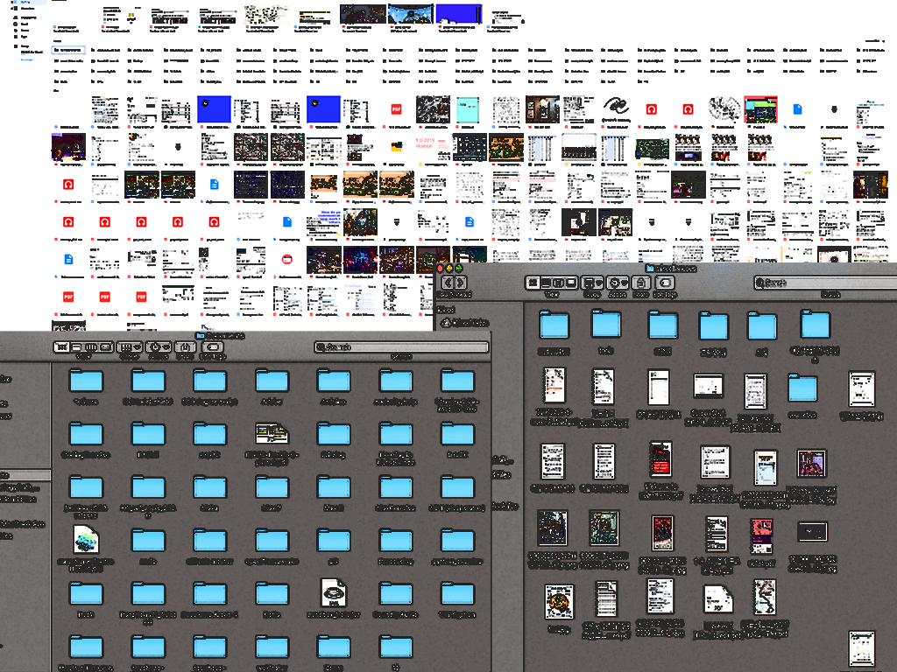

Workshop for Digital Detox
DATA CLEANSING DAY
5 - 6.Sep.2020 (Sat.- Sun.) 14:00 - 15:00(CET)
Workshop ‘Data Cleansing Day’ is an activity for organizing and emptying data such as documents, photos, and videos stacked and replicated(backed-up) in the personal computer, external hard drive, or cloud storage.
Through this activity, we look back at the relationship between the vast amount of digital data we produce, save, replicate, and the physical digital infrastructures constructed to store what we make. The workshop aims not only to clean up our mind distracted by unorganized piled up files but also to get a clean emptied storage space. Furthermore, it is expected to contribute to producing much smaller data carbon footprints due to the reduced data storage.
Workshop ‘Data Cleansing Day’ is an activity for organizing and emptying data such as documents, photos, and videos stacked and replicated(backed-up) in the personal computer, external hard drive, or cloud storage.
Through this activity, we look back at the relationship between the vast amount of digital data we produce, save, replicate, and the physical digital infrastructures constructed to store what we make. The workshop aims not only to clean up our mind distracted by unorganized piled up files but also to get a clean emptied storage space. Furthermore, it is expected to contribute to producing much smaller data carbon footprints due to the reduced data storage.

workshop DATA CLEANSING DAY
- The workshop will run for 1 hour each for 2 days.
- Participants can apply for the desired rounds.
- The workshop will be held online, and attendees participate from their homes via the Zoom.
- After the workshop, participants will receive ‘the 1st Data Cleansing Day’ certificate from artist Mina.
How to...
- Bring your digital storage that requires data cleanup.
- desktop/document/other folders in your PC&laptop; external hard drive; USB; photo or video library; email; cloud drive (google drive/ dropbox/ etc); your favorite SNS;
- Wear comfortable clothes and prepare a cup of tea to make your mind clean and relax.
- Before the start, follow the artist’s guide to warm up and meditate for about 5 minutes.
- Now start to clean up your data.
- At first, take a screenshot of the unorganized, messy screen of your storage.
- There’s no particular way for cleanup. Just organize them in a way that’s convenient and easy for you.
- One tip: Files that are duplicated too much, leave only one crucial thing. Delete files which can be discarded. Don’t forget to empty the trash can at the end.
- If 1hour is too short, you can continue after the workshop.
- If your eyes hurt or neck aches during work, massage your eyes and stretch your arms and legs.
- Have a sip of tea, too.
- Lastly, take a screenshot of the clean storage, and write down the time it took.
- Share before/after photos and time spent with the artist. Then she will issue you a data cleansing day certificate.
- Enjoy your clean digital storage with spare capacity. Thanks to you, the data carbon footprint must have been reduced a little bit!
This workshop is designed as a part of the project ‘off-technology R&D #2 Cloud Island’, which is a participated artistic research of RE:Discovery by NP3 & Minerva Art Academy, supported by Noordenaars, We The North and Mondriaan Fonds.
‘DATA CLEANSING DAY’ is the first in a series of workshops called ‘Workshop for Digital Detox.’
‘DATA CLEANSING DAY’ is the first in a series of workshops called ‘Workshop for Digital Detox.’